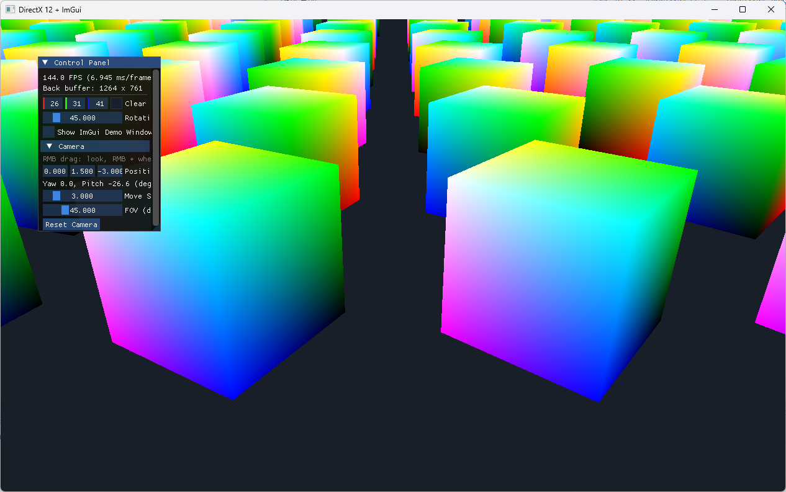

DEFAULT 힙 업로드
정적 메시 VB/IB를 UPLOAD 임시 버퍼에서 DEFAULT 힙으로 복사하기: 초기화용 커맨드 리스트, 배리어, 펜스 대기, 임시 버퍼 수명.
1DEFAULT 힙 업로드: 무엇을 어디에 짜나
1. DEFAULT 힙 업로드: 오늘 내용의 실습이고, 배리어와 펜스 대기를 직접 짜 보게 돼요.
이거부터 해볼까? 이거는 어떻게 함?
목표는 큐브의 VB/IB를 지금처럼 UPLOAD 힙에 두지 않고, UPLOAD 임시 버퍼 → GPU 복사 → DEFAULT 버퍼로 옮기는 것이다. 화면 결과는 똑같고, 바뀌는 건 버퍼가 사는 곳과 그걸 만드는 과정이다. 개념은 2026-10-07 노트 12장과 15장에서 다뤘다.
지금과 무엇이 달라지나
지금 (Mesh.cpp:39-78) | 바꾼 뒤 | |
|---|---|---|
| CPU가 하는 일 | UPLOAD 버퍼에 memcpy하면 끝 | UPLOAD 임시 버퍼에 memcpy + 복사 명령 기록 |
| GPU가 하는 일 | 없음 (Draw 때 UPLOAD에서 읽음) | CopyBufferRegion 실행 |
| 커맨드 리스트 | 필요 없음 | 필요 (초기화 시점에 열린 리스트) |
| 배리어 | 없음 (UPLOAD는 항상 GENERIC_READ) | COMMON → COPY_DEST → VERTEX_AND_CONSTANT_BUFFER / INDEX_BUFFER |
| 동기화 | 없음 | 펜스로 복사 완료를 기다린 뒤 임시 버퍼 해제 |
| VBV/IBV가 가리키는 곳 | UPLOAD 버퍼 | DEFAULT 버퍼 |
전체 흐름
단계별로 짤 것
1. 초기화용 커맨드 리스트 (GraphicsDevice)
복사 명령을 기록하려면 열린 커맨드 리스트가 필요한데, 지금 리스트는 BeginFrame에서만 열린다(GraphicsDevice.cpp:266-267). 초기화 시점에는 GraphicsDevice.cpp:76에서 닫힌 채로 있다. 그래서 프레임 밖에서 리스트를 잠깐 열고 닫는 함수 두 개가 필요하다.
// 초기화용: 프레임 밖에서 커맨드 리스트를 열어 돌려줌
ID3D12GraphicsCommandList* BeginUpload();
// - 할당자 하나 Reset (예: m_frameContexts[0].CommandAllocator)
// - m_commandList->Reset(그 할당자, nullptr)
// 기록한 명령을 제출하고 GPU가 끝낼 때까지 대기
void EndUpload();
// - m_commandList->Close()
// - m_commandQueue->ExecuteCommandLists(1, ...)
// - WaitForGpu() ← 이미 있음 (GraphicsDevice.cpp:199)할당자와 리스트가 private이라 바깥(main)에서는 못 연다. 그래서 GraphicsDevice 안에 둔다. 펜스 대기는 이미 WaitForGpu가 해 준다: 큐에 Signal을 넣고, GetCompletedValue가 그 값에 닿을 때까지 이벤트로 기다린다.
2. DEFAULT 버퍼 만들기 (Mesh.cpp)
CreateUploadBuffer(Mesh.cpp:39)는 그대로 두고 임시 버퍼용으로 재사용한다. 옆에 DEFAULT 버퍼를 만드는 헬퍼를 하나 더 둔다.
static ComPtr<ID3D12Resource> CreateDefaultBuffer(
ID3D12Device* device, ID3D12GraphicsCommandList* cmdList,
const void* data, UINT64 size,
D3D12_RESOURCE_STATES finalState, // VB면 VERTEX_AND_CONSTANT_BUFFER, IB면 INDEX_BUFFER
ComPtr<ID3D12Resource>& uploadBuffer) // 임시 버퍼. 복사가 끝날 때까지 살아 있어야 해서 밖으로 넘김
{
// 1. DEFAULT 힙 버퍼 생성: heapProps.Type = DEFAULT, desc는 CreateUploadBuffer와 같음, 초기 상태 COMMON
// 2. 임시 버퍼 = CreateUploadBuffer(device, data, size)
// 3. 배리어 COMMON → COPY_DEST (TransitionBarrier, D3DUtil.h:34)
// 4. cmdList->CopyBufferRegion(dst, 0, src, 0, size)
// 5. 배리어 COPY_DEST → finalState
// 6. DEFAULT 버퍼 반환
}CreateCommittedResource에 무슨 초기 상태를 넘겨도 실제로는 COMMON으로 만들어진다. COPY_DEST를 넘기면 디버그 레이어가 "무시하고 COMMON으로 만든다"는 경고를 낸다. 그래서 COMMON으로 만들고 배리어로 COPY_DEST로 바꾸는 게 깔끔하다.
3. Mesh가 임시 버퍼를 들고 있기
가장 중요한 부분이다. CreateDefaultBuffer가 끝나도 복사는 아직 안 일어났다. 명령을 기록만 했고, GPU는 EndUpload에서 실행한다. 그 전에 임시 버퍼가 지역 변수로 사라지면 GPU가 해제된 메모리에서 복사하게 된다(디버그 레이어가 "리소스가 사용 중에 삭제됨" 에러를 낸다).
| 바꿀 곳 | 내용 |
|---|---|
Mesh.h:23 | Init(ID3D12Device*, ID3D12GraphicsCommandList*)로 커맨드 리스트를 받음 |
Mesh.h:34-35 옆 | m_vertexUpload, m_indexUpload 멤버 추가 |
Mesh.h | ReleaseUploadBuffers() 추가 (두 임시 버퍼 Reset) |
Mesh.cpp:86, 94 | CreateUploadBuffer 대신 CreateDefaultBuffer 호출. VBV/IBV 코드(89-99줄)는 그대로 (주소만 DEFAULT 버퍼 것이 됨) |
4. main에서 순서 맞추기
gfx.Init(hwnd);
ID3D12GraphicsCommandList* uploadList = gfx.BeginUpload();
cube.Init(gfx.Device(), uploadList); // 기록만
gfx.EndUpload(); // 실행 + 펜스 대기 → 여기서 복사 완료
cube.ReleaseUploadBuffers(); // 이제 임시 버퍼를 지워도 됨
instanceBuffer.Init(...); // 이하 그대로메시가 여러 개면 BeginUpload와 EndUpload 사이에서 Init을 전부 부르면 된다. 복사 명령은 한 리스트에 모이고, 실행과 펜스 대기는 한 번이다(10-07 노트 15장의 "복사 명령 몰아 기록").
확인 방법
- 화면이 전과 똑같이 나오면 성공. 버퍼 위치만 바뀌었으므로 결과 이미지가 같아야 한다.
- 디버그 레이어가 에러에서 멈추도록 되어 있다(
GraphicsDevice.cpp:35-36). 배리어 상태를 틀리면 그 자리에서 멈추고 출력 창에 이유가 나온다. - 일부러
ReleaseUploadBuffers()를EndUpload()앞으로 옮겨 보면 어떤 에러가 나는지 볼 수 있다. 펜스 대기가 왜 필요한지 눈으로 확인하는 실험이다.
1번(초기화용 커맨드 리스트)은 왜 필요한가
1,2,3,4 다중요하긴한데 1번이 왜 필요하다고?
한 줄로: 복사(CopyBufferRegion)와 배리어(ResourceBarrier)는 GPU가 하는 일이라서, 커맨드 리스트에 기록해서 큐로 보내는 방법밖에 없기 때문이다. 그런데 초기화 시점에는 열려 있는 커맨드 리스트가 없다.
디바이스가 하는 일과 커맨드 리스트가 하는 일
| 누가 호출 | 언제 일어나나 | 예 | |
|---|---|---|---|
| 생성 | ID3D12Device | 호출하는 그 자리에서 (CPU) | CreateCommittedResource, CreateRootSignature, PSO 생성 |
| CPU가 메모리에 쓰기 | ID3D12Resource::Map + memcpy | 그 자리에서 (CPU) | Mesh.cpp:66-74 |
| GPU 작업 | ID3D12GraphicsCommandList | 기록만 해 두고, 큐에 제출한 뒤 GPU가 나중에 실행 | CopyBufferRegion, ResourceBarrier, Clear, Draw |
지금 코드에 커맨드 리스트가 필요 없었던 이유가 여기 있다. UPLOAD 버퍼는 CPU가 Map해서 직접 쓰니까 생성 + memcpy로 끝난다(위 표의 1, 2행). 하지만 DEFAULT 힙은 CPU가 Map할 수 없으므로 "UPLOAD에서 DEFAULT로 옮겨라"를 GPU에게 시켜야 하고(3행), GPU에게 일을 시키는 유일한 통로가 커맨드 리스트 → 큐다.
왜 지금 있는 리스트를 그냥 못 쓰나
커맨드 리스트는 열림(기록 중) / 닫힘 두 상태가 있고, 열려 있을 때만 명령을 기록할 수 있다.
GraphicsDevice.cpp:74-76: 리스트를 만들자마자Close()한다. 그래서gfx.Init이후cube.Init시점에는 닫혀 있다.- 리스트가 열리는 곳은
BeginFrame의Reset뿐이다(GraphicsDevice.cpp:266-267). 루프에 들어가야 열린다. - 열려면
m_commandList->Reset(할당자, nullptr)가 필요하고, 그 전에 할당자도Reset해야 한다. 할당자는 기록된 명령이 실제로 저장되는 메모리다. 그런데 할당자와 리스트가 둘 다GraphicsDevice의private멤버라 main이나Mesh에서는 손댈 수 없다.
그래서 BeginFrame에서 하는 "할당자 Reset → 리스트 Reset"을, 프레임 밖에서 할 수 있게 열어 주는 것이 BeginUpload다. 그리고 EndFrame이 "Close → Execute → Present → Signal"을 하듯이, EndUpload는 Present 없이 "Close → Execute → 펜스 대기"만 한다.
| 프레임용 (있음) | 초기화용 (추가) | |
|---|---|---|
| 열기 | BeginFrame: 할당자 Reset + 리스트 Reset + 백버퍼 배리어 + 클리어... | BeginUpload: 할당자 Reset + 리스트 Reset |
| 닫기 | EndFrame: Close + Execute + Present + Signal (기다리지 않음) | EndUpload: Close + Execute + 완료까지 기다림 |
EndUpload가 기다리는 이유는 3번(임시 버퍼 수명) 때문이다. 기다려야 그 다음 줄에서 임시 버퍼를 지워도 안전하다. 초기화는 한 번뿐이라 CPU가 잠깐 멈춰도 문제없다.
할당자를 아무거나 Reset해도 되나
할당자는 GPU가 그 안의 명령을 다 실행한 뒤에만 Reset할 수 있다. 초기화 시점에는 아직 아무것도 제출하지 않았으므로 m_frameContexts[0]의 할당자를 써도 안전하다. 그리고 EndUpload가 GPU 완료까지 기다리므로, 이후 첫 BeginFrame이 같은 할당자를 다시 Reset해도 문제없다.
BeginFrame이 연 리스트에 복사를 끼워 넣을 수도 있다. 하지만 그러면 메시 준비가 렌더 루프에 섞이고, 임시 버퍼를 언제 지울지(그 프레임의 펜스가 끝난 뒤) 따로 추적해야 한다. 초기화 때 별도로 열고 기다리는 쪽이 단순하다. 나중에 로딩 중 멈춤이 문제가 되면, 업로드 전용 할당자 / 리스트 / 복사 큐를 따로 두는 쪽으로 발전시킨다(10-07 노트 15장).
그냥 Init에서 Close를 안 하면 되지 않나
아니 그러면 gfx.init에서 그냥 close안하면 되는거아냐?
된다. 실제로 많이 쓰는 방식이다(Frank Luna 책의 예제가 이렇게 한다: 리스트를 연 채로 두고, 초기화 코드가 기록한 뒤 Close → Execute → Flush). GraphicsDevice.cpp:76의 Close()만 지우면 BeginUpload가 하던 "열기"는 필요 없어진다.
게다가 닫기 쪽도 지금 있는 public 함수로 할 수 있다. CommandList(), CommandQueue() getter(GraphicsDevice.h:35-36)와 WaitForGpu()(GraphicsDevice.h:21)가 이미 공개되어 있기 때문이다.
gfx.Init(hwnd); // 리스트가 열린 채로 끝남
ID3D12GraphicsCommandList* list = gfx.CommandList();
cube.Init(gfx.Device(), list); // 기록
list->Close();
ID3D12CommandList* lists[] = { list };
gfx.CommandQueue()->ExecuteCommandLists(1, lists);
gfx.WaitForGpu(); // 복사 완료
cube.ReleaseUploadBuffers();할당자도 문제없다. 리스트는 m_frameContexts[0]의 할당자로 만들어졌고(GraphicsDevice.cpp:74-75), WaitForGpu로 GPU가 끝난 뒤이므로 첫 BeginFrame이 그 할당자를 Reset해도 안전하다.
대신 생기는 약속
단점은 기능이 아니라 "누군가 반드시 닫아야 한다"는 숨은 약속이 생긴다는 점이다.
gfx.Init이 끝난 뒤 리스트가 열려 있으므로, 첫BeginFrame전에 반드시 누군가 Close + Execute를 해야 한다. 아무도 안 하면BeginFrame의m_commandList->Reset(GraphicsDevice.cpp:267)이 "닫히지 않은 리스트를 Reset" 에러를 낸다. 업로드할 게 없는 프로그램에서도 닫는 코드는 있어야 한다.- Close / Execute / Wait를 main이 직접 하므로
GraphicsDevice의 프레임 관리 규칙(언제 열리고 닫히는지)이 클래스 밖으로 새어 나온다. - 시작할 때 한 번만 통한다. 나중에 게임 도중 메시를 새로 불러오려면 결국 프레임 밖에서 리스트를 다시 여는 함수가 필요하다.
| Init에서 Close 안 함 | BeginUpload / EndUpload | |
|---|---|---|
| 추가 코드 | 거의 없음 (한 줄 삭제) | 함수 2개 |
| 열림/닫힘 짝 | Init(열기)과 main(닫기)에 흩어짐 | 한 쌍으로 보임 |
| 깜빡하면 | 첫 BeginFrame에서 에러 | 짝이 눈에 보여서 덜 깜빡함 |
| 게임 도중 다시 업로드 | 불가 (다른 함수 필요) | 가능 |
그러니까 루프 전에 닫아야 한다는 것인가
그러니까 너 말은 루프 들어가기저에 close해야한다는거야?
그렇다. 정확히는 첫 BeginFrame 전에다. 규칙은 하나다: ID3D12GraphicsCommandList::Reset은 닫힌 리스트에만 호출할 수 있다. BeginFrame이 매 프레임 Reset(GraphicsDevice.cpp:267)으로 시작하므로, 루프에 들어갈 때 리스트는 닫혀 있어야 한다.
지금 GraphicsDevice.cpp:76에 Close()가 있는 이유가 바로 이것이다. 그 줄을 지운다는 건 "닫는 시점을 Init 끝에서 루프 직전으로 옮긴다"는 뜻이다.
| 리스트 상태 흐름 | 지금 | Close를 지우면 |
|---|---|---|
CreateCommandList | 열림 | 열림 |
gfx.Init 끝 | 닫힘 (76줄) | 열림 |
cube.Init | (리스트 안 씀) | 복사 명령 기록 |
| 루프 직전 | 닫힘 | Close + Execute + WaitForGpu |
매 프레임 BeginFrame | Reset → 열림 | Reset → 열림 |
매 프레임 EndFrame | Close → Execute | Close → Execute |
Close는 "기록 끝"이지 "실행"이 아니다. Close만 하고 ExecuteCommandLists를 안 하면 기록한 복사 명령은 다음 Reset 때 그냥 버려진다. 에러는 안 나지만 DEFAULT 버퍼는 빈 채로 남아 큐브가 안 그려진다. 그래서 루프 전에 Close → Execute → 펜스 대기 세 가지가 한 묶음이다.
정확히 어떤 호출 전인가
아니근데 정확하게 루프전이 아니라 어떤 명령어 전에 해야하는거야?
정확한 기준은 첫 BeginFrame 안의 CommandAllocator->Reset()(GraphicsDevice.cpp:266)이다. 리스트 Reset(267줄)보다 한 줄 앞이다.
이유는 할당자가 겹치기 때문이다.
- 리스트는
m_frameContexts[0]의 할당자로 만들어졌다(GraphicsDevice.cpp:74-75). 그래서 업로드 명령은 할당자 0의 메모리에 기록된다. - 첫 프레임은
m_frameIndex = 0이라WaitForNextFrameContext가 같은 할당자 0을 고른다(GraphicsDevice.cpp:225). - 그 할당자의
FenceValue는 아직 0이라 226줄의 대기는 그냥 통과한다. 즉BeginFrame은 업로드를 기다려 주지 않는다. - 그리고 266줄에서 할당자 0을 Reset한다. 할당자를 Reset하면 그 안에 기록된 명령 메모리를 비운다.
| 266줄 시점에 업로드가 | 결과 |
|---|---|
| Close 안 됨 (아직 기록 중) | 디버그 레이어 에러: 기록 중인 리스트가 쓰는 할당자는 Reset할 수 없음 |
| Close만 됨, Execute 안 됨 | 에러 없음. 복사 명령이 그냥 지워짐 → DEFAULT 버퍼가 빈 채로 남아 큐브가 안 보임 |
| Execute는 됨, 대기 안 함 | GPU가 아직 그 명령을 실행 중일 수 있음 → "실행 중인 할당자를 Reset" 에러 |
Close → Execute → WaitForGpu 완료 | 정상 |
정리하면 Close → Execute → WaitForGpu를 전부 GraphicsDevice.cpp:266 전에 끝내야 한다. 그 사이의 instanceBuffer.Init, rootSignature.Init, PSO, ImGui 초기화는 디바이스만 쓰고 이 리스트를 건드리지 않으므로, 이 세 줄은 cube.Init 바로 뒤에 둬도 되고 루프 직전에 둬도 된다. 별도로 ReleaseUploadBuffers()는 WaitForGpu 뒤여야 한다.
같은 리스트를 Close하고 다시 Reset해도 되나
같은 커맨드리스트에 close하고 reset하는건 문제 없어?
문제없다. 오히려 그게 커맨드 리스트의 원래 쓰는 법이다. 지금 렌더 루프가 이미 매 프레임 그렇게 한다: EndFrame에서 Close(GraphicsDevice.cpp:297) → Execute(301) → 다음 BeginFrame에서 같은 m_commandList를 Reset(267).
핵심은 리스트와 할당자의 역할이 다르다는 것이다.
| 커맨드 리스트 | 커맨드 할당자 | |
|---|---|---|
| 정체 | 명령을 적는 "펜" (기록 인터페이스) | 명령이 실제로 적히는 "종이" (메모리) |
| Reset 조건 | 닫혀 있기만 하면 언제든. Execute 직후 GPU가 아직 실행 중이어도 됨 | GPU가 그 안의 명령을 다 실행한 뒤에만 (펜스 확인) |
| Reset하면 | 새 할당자(또는 같은 할당자)에 이어서 새로 기록 시작 | 종이를 비움 |
리스트를 Reset해도 GPU가 읽고 있는 명령은 할당자 쪽 메모리에 그대로 있으므로 안전하다. 그래서 지금 루프는 프레임 N을 Execute한 직후, GPU가 아직 그걸 그리는 중에도 같은 리스트를 다른 할당자(프레임 N+1용)로 Reset해서 다음 프레임을 기록한다. 기다리는 건 할당자 쪽(WaitForNextFrameContext)뿐이다.
- Reset은 닫힌 리스트에만 (열린 리스트를 Reset하면 에러).
- 할당자 하나에는 동시에 하나의 리스트만 기록할 수 있다. 다른 리스트가 같은 할당자로 기록 중이면 Reset 에러.
- 할당자 Reset은 GPU 완료 후. 업로드 경우
WaitForGpu가 이걸 보장한다.
업로드 흐름에 대입하면 Close → Execute → WaitForGpu → (첫 BeginFrame) 할당자 Reset → 리스트 Reset이 되어 위 조건을 모두 만족한다. 참고로 CreateCommandList는 리스트를 열린 상태로 만들기 때문에 GraphicsDevice.cpp:76에서 바로 Close하는 것이고, 처음부터 닫힌 상태로 만드는 ID3D12Device4::CreateCommandList1도 있다.
최종 순서 확인: InstanceBuffer가 아니라 Mesh
그러면 일단 gfx init에서 close안하고 instancebuffer에서 default heap생성해서 upload힙 복사하고 나서 루프 들어가기 전에 close하면되는거아냐?
흐름은 맞고, 두 군데만 고치면 된다.
- DEFAULT로 옮기는 건
InstanceBuffer가 아니라Mesh(큐브 VB/IB)다. 인스턴스 버퍼는 매 프레임 CPU가 새로 쓰는 데이터라서 UPLOAD에서 바로 읽는 게 맞다(10-07 노트 12장 "인스턴스 버퍼는 왜 DEFAULT로 복사하지 않나"). 한 번 올리고 계속 읽는 정적 메시만 DEFAULT로 간다. - 루프 전에 Close만이 아니라 Close → Execute →
WaitForGpu→ 임시 버퍼 해제까지 해야 한다. Close만 하면 복사 명령이 실행되지 않고 버려진다.
gfx.Init(hwnd); // GraphicsDevice.cpp:76의 Close() 삭제 → 열린 채로 끝남
cube.Init(gfx.Device(), gfx.CommandList()); // DEFAULT 버퍼 + 배리어 + CopyBufferRegion 기록
instanceBuffer.Init(...); // 그대로 (UPLOAD)
rootSignature.Init(...); // 그대로
basicPipeline.Init(...); // 그대로
imgui.Init(...); // 그대로
// 루프 전 (정확히는 첫 BeginFrame의 할당자 Reset 전)
gfx.CommandList()->Close();
ExecuteCommandLists(...);
gfx.WaitForGpu();
cube.ReleaseUploadBuffers();
while (PumpMessages()) { ... }무엇을 DEFAULT에 두나: 누가, 얼마나 자주 쓰나
아 그러니까 인스턴스 버퍼쪽은 world행렬 가지고있는 친구들인데 얘들은 뭐 컴퓨트 셰이더로 처리하지않는이상 그냥 cpu에서 값을 업로드 해줘야하니까 디폴트로 vram에 업로드 할 수 없는거고 버텍스버퍼, 인덱스 버퍼는 그냥 어차피 안바뀌니까 디폴트로 쓰지 이거지?
맞다. 한 가지만 다듬으면, 인스턴스 버퍼도 DEFAULT로 올리는 게 불가능한 건 아니고 이득이 없는 것이다. 매 프레임 임시 UPLOAD 버퍼 → 복사 → 배리어를 하면 된다. 다만 GPU가 그 프레임에 한 번 읽고 버리는 데이터라, 결국 UPLOAD에서 한 번 읽는 것과 같은 PCIe 전송에 복사 단계만 더해진다.
컴퓨트 셰이더 이야기는 정확히 맞다. 그 경우는 반대로 DEFAULT가 필수가 된다.
| 데이터 | 누가 쓰나 | 얼마나 자주 | 힙 |
|---|---|---|---|
| 큐브 VB/IB | CPU (시작할 때 한 번) | 안 바뀜 | DEFAULT (임시 UPLOAD로 한 번 복사) |
| 인스턴스 World (지금) | CPU (BuildInstances) | 매 프레임 | UPLOAD에서 바로 읽음 |
| 인스턴스 World (컴퓨트로 계산) | GPU (컴퓨트 셰이더가 UAV로 씀) | 매 프레임 | DEFAULT 필수. UPLOAD 힙에는 UAV를 만들 수 없음. CPU 업로드가 아예 없어짐 |
즉 기준은 "바뀌냐 안 바뀌냐" 하나가 아니라 누가 쓰고(CPU / GPU), 얼마나 자주 쓰고, GPU가 몇 번 읽나다. CPU가 자주 쓰면 UPLOAD, CPU가 한 번 쓰고 GPU가 오래 읽으면 DEFAULT로 복사, GPU가 쓰면 DEFAULT.
Close를 cube.Init 안에서 하면?
일단 그러면 cube init함수안에 gfx close를 하면되는거아냐?
할 수는 있다. 다만 Close만 넣으면 안 되고, 넣는다면 Close → Execute → 대기까지 전부 Mesh::Init 안에 넣어야 한다. Close만 하고 나오면 Execute는 결국 main이 해야 하므로 하나의 묶음이 두 곳으로 쪼개진다.
| A. Mesh::Init은 기록만, 닫기·실행·대기는 main | B. Mesh::Init이 전부 (기록 + Close + Execute + 대기) | |
|---|---|---|
| Init이 받는 것 | 디바이스, 커맨드 리스트 | 디바이스, 리스트, 큐, 펜스 대기 수단 (사실상 GraphicsDevice 전체) |
| 임시 버퍼 | 멤버로 들고 있다가 ReleaseUploadBuffers() | 지역 변수로 충분. 함수 안에서 대기까지 끝나므로 함수가 끝날 때 해제돼도 안전 |
| 메시가 여러 개면 | 모두 기록 → 실행·대기 1번 | 메시마다 실행·대기. 그리고 첫 Init이 리스트를 닫으므로 두 번째 Init은 닫힌 리스트에 기록하려다 에러 (매번 다시 Reset해야 함) |
| 숨은 약속 | "루프 전에 닫아야 함"이 main에 보임 | "Init에 들어올 때 리스트가 열려 있어야 하고, 나갈 때 닫혀 있음"이 Mesh 안에 숨음 |
| 역할 | Mesh = 데이터와 명령 준비, GraphicsDevice = 제출과 동기화 | Mesh가 제출과 동기화까지 맡음 |
큐브 하나라면 B도 동작하고, 임시 버퍼를 멤버로 둘 필요가 없어져 오히려 코드가 짧다. 하지만 메시가 하나만 늘어나도 바로 깨지는 구조라, 기록(Mesh)과 제출·대기(GraphicsDevice / main)를 나누는 A를 권한다. 커맨드 리스트를 쓰는 다른 코드도 대부분 이렇게 나뉜다: 렌더 코드는 리스트에 기록만 하고, EndFrame이 닫고 제출한다.
Close → Execute → 대기는 각각 왜 필요한가
Close → Execute → 대기는 왜 해야하는건데?
출발점은 하나다: 커맨드 리스트에 기록하는 것과 GPU가 실행하는 것은 다른 시점이다. CopyBufferRegion을 호출하는 순간 복사가 일어나는 게 아니라 "복사하라"는 메모가 할당자 메모리에 적힐 뿐이다. 세 단계는 그 메모를 GPU에게 넘기고, 끝났는지 확인하는 과정이다.
| 단계 | 하는 일 | 빼먹으면 |
|---|---|---|
| Close | "기록 끝". 리스트를 실행 가능한 상태로 확정한다 | ExecuteCommandLists는 닫힌 리스트만 받는다. 열린 리스트를 넘기면 에러 |
| Execute | 리스트를 큐에 넣어 GPU에 제출한다 | GPU는 그 명령을 영영 모른다. 다음 Reset 때 메모가 버려지고 DEFAULT 버퍼는 빈 채로 남는다 |
| 대기 (Signal + 펜스) | GPU가 실제로 복사를 끝낼 때까지 CPU가 기다린다 | 아래 두 가지가 GPU 작업 중에 일어난다 |
ExecuteCommandLists는 제출만 하고 바로 돌아온다. GPU는 그 뒤에 자기 속도로 실행한다. 그래서 CPU가 "복사가 끝났다"고 믿고 해야 하는 일이 있으면 기다려야 한다. 이번에는 두 가지다.
- 임시 UPLOAD 버퍼 해제 (
ReleaseUploadBuffers): GPU가 그 버퍼에서 읽어 복사하는 중인데 CPU가 지우면, GPU가 해제된 메모리를 읽는다. - 할당자 Reset (첫
BeginFrame,GraphicsDevice.cpp:266): GPU가 아직 할당자 0에 적힌 복사 명령을 읽는 중인데 CPU가 그 메모리를 비우면 안 된다.
COPY_DEST → VERTEX_AND_CONSTANT_BUFFER)가 "복사가 끝나야 정점으로 읽을 수 있다"를 GPU 안에서 보장한다. 그래서 복사 직후 첫 프레임의 Draw는 대기가 없어도 올바른 데이터를 읽는다. 펜스 대기는 CPU 쪽 일(메모리 해제, 할당자 재사용)을 GPU 진행에 맞추기 위한 것이다. GPU 안의 순서는 배리어, CPU와 GPU 사이의 순서는 펜스가 맡는다.
참고로 대기를 매 프레임 하지 않는 렌더 루프에서는 같은 문제를 "프레임별 할당자 + 그 프레임의 펜스 값을 기억해 두었다가 재사용 전에 확인"(WaitForNextFrameContext)으로 풀고 있다. 초기화는 한 번뿐이라 그냥 끝까지 기다리는 것이 가장 단순하다.
BeginUpload / EndUpload가 낫다. 어느 쪽이든 2~4번(DEFAULT 버퍼, 배리어, 펜스 대기 후 임시 버퍼 해제)은 똑같다.
업로드 코드를 Mesh 밖으로 빼기
근데 지금 cube init에 그렇게 코드를 작성하면 추후에 메쉬가 늘어날때 문제니까 그냥 따로 빼는게 낫지않아?
맞다. 다만 무엇이 문제인지 나눠 보면, "메시마다 자기 복사 명령을 기록"하는 것 자체는 메시가 늘어도 문제없다. 여러 메시가 같은 열린 리스트에 차례로 기록하고 마지막에 한 번 제출하면 된다. 메시가 늘 때 깨지는 건 (B 방식처럼) 닫기·제출·대기를 Init 안에 넣는 것이다.
그래도 따로 빼는 게 나은 이유가 두 가지 더 있다.
- 임시 버퍼 관리가 메시마다 반복된다. 메시마다
m_vertexUpload/m_indexUpload멤버와ReleaseUploadBuffers()를 두고, main이 메시마다 Release를 불러야 한다. 렌더링에 쓰지도 않는 임시 버퍼를 Mesh가 들고 있는 셈이다. - 메시 말고도 업로드할 게 생긴다. 텍스처, 정적 상수 데이터 등도 같은 "임시 버퍼 → 복사 → 배리어 → 대기" 흐름을 탄다.
제안: 업로드 전담 클래스
"리스트 열기 / 복사 기록 / 임시 버퍼 보관 / 닫기·제출·대기·해제"를 한 클래스(예: Uploader)가 맡는다. Mesh는 "이 데이터를 DEFAULT 버퍼로 만들어 줘"라고 부탁만 하고 결과 버퍼만 받는다.
class Uploader
{
public:
// 업로드 시작: 커맨드 리스트를 열린 상태로 받아 둠
void Begin(ID3D12Device* device, ID3D12GraphicsCommandList* cmdList);
// DEFAULT 버퍼 생성 + 임시 UPLOAD 버퍼에 복사 + 배리어 + CopyBufferRegion 기록
// 임시 버퍼는 Uploader가 내부 목록에 보관
ComPtr<ID3D12Resource> CreateDefaultBuffer(const void* data, UINT64 size,
D3D12_RESOURCE_STATES finalState);
// Close → Execute → 대기 → 보관해 둔 임시 버퍼 전부 해제
void End(ID3D12CommandQueue* queue, GraphicsDevice& gfx);
private:
std::vector<ComPtr<ID3D12Resource>> m_pendingUploads; // End까지 살려 둘 임시 버퍼들
// ...
};uploader.Begin(gfx.Device(), gfx.CommandList());
cube.Init(gfx.Device(), uploader); // 안에서 uploader.CreateDefaultBuffer(...) 두 번
plane.Init(gfx.Device(), uploader); // 메시가 늘어도 줄만 추가
uploader.End(...); // 제출·대기·임시 버퍼 해제 한 번| Mesh가 직접 (앞의 A 방식) | Uploader로 분리 | |
|---|---|---|
| Mesh가 아는 것 | 리스트, 배리어, 임시 버퍼 수명 | "데이터 주고 DEFAULT 버퍼 받기"만 |
| 임시 버퍼 | 메시마다 멤버 + Release | Uploader 목록 하나, End에서 한꺼번에 해제 |
| 메시 추가 | Init + Release 호출 추가 | Init 한 줄 추가 |
| 나중에 바꿀 때 | 모든 메시 코드를 고침 | Uploader 안만 고침 (staging 링 버퍼, 복사 큐, 텍스처 업로드) |
10-07 노트 15장의 staging 링 버퍼나 복사 전용 큐로 발전할 때도, 바뀌는 곳이 Uploader 안으로 한정된다. 처음에는 위처럼 "임시 버퍼마다 CreateCommittedResource + 목록에 보관 + End에서 대기 후 비우기"로 단순하게 시작하면 된다.
2구현: Uploader 클래스와 바뀐 코드
코드는 너가 작성하고 diff 보여줘봐 자세하게
1장에서 정리한 설계(업로드 전담 클래스)대로 구현했다. 바뀐 파일은 다음과 같다.
| 파일 | 변경 |
|---|---|
Uploader.h / Uploader.cpp | 새 파일. 업로드 전용 할당자 + 리스트, CreateDefaultBuffer, 임시 버퍼 보관, End에서 제출·대기·해제 |
Mesh.h / Mesh.cpp | Init(Uploader&)로 변경. CreateUploadBuffer는 Uploader.cpp로 옮겨짐 |
main.cpp | uploader.Begin → cube.Init → uploader.End, 종료 시 Shutdown |
DirectX12.vcxproj, .filters | 새 파일 등록 |
GraphicsDevice | 변경 없음 |
설계에서 바꾼 한 가지: 업로드 전용 커맨드 리스트
1장에서는 GraphicsDevice.cpp:76의 Close를 지우고 프레임용 리스트를 빌려 쓰는 방법을 이야기했다. 구현할 때는 Uploader가 자기 할당자와 리스트를 따로 갖게 했다.
GraphicsDevice를 고칠 필요가 없고, "루프 전에 누가 꼭 닫아야 한다"는 숨은 약속이 사라진다. 열기(Begin)와 닫기(End)가 같은 클래스 안에서 짝을 이룬다.- 할당자를 프레임용과 공유하지 않으므로, 1장에서 따진 "첫
BeginFrame의 할당자 Reset(266줄) 전에 끝내야 한다" 같은 조건도 없다. - 나중에 게임 도중 다시 업로드할 때도
Begin/End를 그대로 쓸 수 있다. - 대가는 할당자와 리스트가 하나씩 더 생기는 것뿐이다. 제출은 같은 큐(
gfx.CommandQueue())에 하고, 대기는 기존gfx.WaitForGpu()를 쓴다.
Uploader.h
DirectX12/Uploader.h (43줄)
#pragma once
#include "D3DUtil.h"
#include <vector>
class GraphicsDevice;
// 정적 데이터(메시 VB/IB 등)를 DEFAULT 힙 버퍼로 올리는 클래스
// - CPU는 DEFAULT 힙에 직접 쓸 수 없으므로: 임시 UPLOAD 버퍼에 쓰기 → GPU가 CopyBufferRegion으로 복사
// - 복사 명령은 이 클래스의 커맨드 리스트에 모아서 기록하고, End에서 한 번에 제출 + 완료 대기
// - 임시 UPLOAD 버퍼는 GPU 복사가 끝날 때까지 살아 있어야 하므로 End까지 여기서 보관
//
// 사용법:
// uploader.Begin(gfx);
// cube.Init(uploader); // 안에서 CreateDefaultBuffer 호출 (기록만)
// uploader.End(); // 제출 → 대기 → 임시 버퍼 해제
class Uploader
{
public:
// 업로드 시작: 업로드 전용 커맨드 리스트를 열어 기록할 준비
void Begin(GraphicsDevice& gfx);
// size 바이트짜리 DEFAULT 힙 버퍼를 만들고, data를 복사하는 명령을 기록
// - 반환 시점에는 아직 복사되지 않음 (End 이후에 완료)
// - finalState: 복사 후 버퍼를 둘 상태 (VB: VERTEX_AND_CONSTANT_BUFFER, IB: INDEX_BUFFER)
ComPtr<ID3D12Resource> CreateDefaultBuffer(const void* data, UINT64 size, D3D12_RESOURCE_STATES finalState);
// 기록 종료: Close → 제출 → GPU 완료 대기 → 임시 UPLOAD 버퍼 해제
void End();
// 리소스 해제
void Shutdown();
private:
GraphicsDevice* m_gfx = nullptr;
// GraphicsDevice의 프레임용 리스트와 따로 둠
// → 프레임 루프와 상관없이 언제든 열고 닫을 수 있고, gfx.Init의 Close를 건드리지 않아도 됨
ComPtr<ID3D12CommandAllocator> m_commandAllocator;
ComPtr<ID3D12GraphicsCommandList> m_commandList;
// End에서 GPU 복사가 끝날 때까지 살려 둘 임시 UPLOAD 버퍼들
std::vector<ComPtr<ID3D12Resource>> m_pendingUploads;
};Uploader.cpp
DirectX12/Uploader.cpp (120줄)
#include "Uploader.h"
#include "GraphicsDevice.h"
#include <cstring>
// ---------------------------------------------------------------------------
// 버퍼 생성 헬퍼
// ---------------------------------------------------------------------------
// size 바이트짜리 1차원 버퍼 리소스를 heapType 힙에 initialState 상태로 만든다
static ComPtr<ID3D12Resource> CreateBuffer(ID3D12Device* device, D3D12_HEAP_TYPE heapType, UINT64 size,
D3D12_RESOURCE_STATES initialState, const char* what)
{
D3D12_HEAP_PROPERTIES heapProps = {};
heapProps.Type = heapType;
D3D12_RESOURCE_DESC desc = {};
desc.Dimension = D3D12_RESOURCE_DIMENSION_BUFFER;
desc.Width = size;
desc.Height = 1;
desc.DepthOrArraySize = 1;
desc.MipLevels = 1;
desc.Format = DXGI_FORMAT_UNKNOWN;
desc.SampleDesc.Count = 1;
desc.Layout = D3D12_TEXTURE_LAYOUT_ROW_MAJOR;
desc.Flags = D3D12_RESOURCE_FLAG_NONE;
ComPtr<ID3D12Resource> buffer;
ThrowIfFailed(device->CreateCommittedResource(
&heapProps, D3D12_HEAP_FLAG_NONE, &desc,
initialState,
nullptr,
IID_PPV_ARGS(&buffer)), what);
return buffer;
}
// ---------------------------------------------------------------------------
// Uploader
// ---------------------------------------------------------------------------
void Uploader::Begin(GraphicsDevice& gfx)
{
m_gfx = &gfx;
ID3D12Device* device = gfx.Device();
// 처음 한 번만 만듦. 리스트는 열린 상태로 만들어지므로 바로 닫아 두고, 아래에서 Reset으로 연다
if (!m_commandAllocator)
{
ThrowIfFailed(device->CreateCommandAllocator(D3D12_COMMAND_LIST_TYPE_DIRECT,
IID_PPV_ARGS(&m_commandAllocator)), "CreateCommandAllocator(Upload)");
ThrowIfFailed(device->CreateCommandList(0, D3D12_COMMAND_LIST_TYPE_DIRECT,
m_commandAllocator.Get(), nullptr, IID_PPV_ARGS(&m_commandList)), "CreateCommandList(Upload)");
ThrowIfFailed(m_commandList->Close(), "CommandList::Close(Upload)");
}
// 기록 시작. 이전 End에서 GPU 완료까지 기다렸으므로 할당자를 Reset해도 안전
ThrowIfFailed(m_commandAllocator->Reset(), "CommandAllocator::Reset(Upload)");
ThrowIfFailed(m_commandList->Reset(m_commandAllocator.Get(), nullptr), "CommandList::Reset(Upload)");
}
ComPtr<ID3D12Resource> Uploader::CreateDefaultBuffer(const void* data, UINT64 size, D3D12_RESOURCE_STATES finalState)
{
ID3D12Device* device = m_gfx->Device();
// 1. 진짜 버퍼: DEFAULT 힙 (VRAM). CPU는 Map할 수 없음
// 버퍼는 초기 상태를 무엇으로 넘겨도 COMMON으로 만들어지므로 COMMON으로 만들고 배리어로 바꾼다
ComPtr<ID3D12Resource> defaultBuffer = CreateBuffer(device, D3D12_HEAP_TYPE_DEFAULT, size,
D3D12_RESOURCE_STATE_COMMON, "CreateCommittedResource(Default)");
// 2. 임시 버퍼: UPLOAD 힙. CPU가 Map해서 데이터를 써 둔다
ComPtr<ID3D12Resource> uploadBuffer = CreateBuffer(device, D3D12_HEAP_TYPE_UPLOAD, size,
D3D12_RESOURCE_STATE_GENERIC_READ, "CreateCommittedResource(Upload)");
void* mapped = nullptr;
D3D12_RANGE readRange = { 0, 0 }; // CPU는 읽지 않음
ThrowIfFailed(uploadBuffer->Map(0, &readRange, &mapped), "Map(Upload)");
memcpy(mapped, data, static_cast<size_t>(size));
uploadBuffer->Unmap(0, nullptr);
// 3. 복사 명령 기록 (여기서는 기록만. 실제 복사는 End에서 제출한 뒤 GPU가 실행)
// COMMON → COPY_DEST: 복사 대상으로 쓰겠다고 알림
D3D12_RESOURCE_BARRIER toCopyDest = TransitionBarrier(defaultBuffer.Get(),
D3D12_RESOURCE_STATE_COMMON, D3D12_RESOURCE_STATE_COPY_DEST);
m_commandList->ResourceBarrier(1, &toCopyDest);
// UPLOAD 버퍼의 0번 바이트부터 size 바이트를 DEFAULT 버퍼의 0번 바이트로
m_commandList->CopyBufferRegion(defaultBuffer.Get(), 0, uploadBuffer.Get(), 0, size);
// COPY_DEST → finalState: 복사가 끝나야 VB/IB로 읽을 수 있음 (GPU 안의 순서는 배리어가 보장)
D3D12_RESOURCE_BARRIER toFinal = TransitionBarrier(defaultBuffer.Get(),
D3D12_RESOURCE_STATE_COPY_DEST, finalState);
m_commandList->ResourceBarrier(1, &toFinal);
// 4. 임시 버퍼는 GPU가 복사를 끝낼 때까지 살아 있어야 하므로 End까지 보관
m_pendingUploads.push_back(uploadBuffer);
return defaultBuffer;
}
void Uploader::End()
{
// 1. 기록 끝
ThrowIfFailed(m_commandList->Close(), "CommandList::Close(Upload)");
// 2. GPU에 제출 (바로 반환됨. GPU는 이후에 실행)
ID3D12CommandList* lists[] = { m_commandList.Get() };
m_gfx->CommandQueue()->ExecuteCommandLists(1, lists);
// 3. 복사가 끝날 때까지 CPU 대기 (큐에 Signal → 펜스 값 도달까지 기다림)
m_gfx->WaitForGpu();
// 4. 이제 GPU가 임시 버퍼를 다 읽었으므로 해제해도 안전
m_pendingUploads.clear();
}
void Uploader::Shutdown()
{
m_pendingUploads.clear();
m_commandList.Reset();
m_commandAllocator.Reset();
m_gfx = nullptr;
}읽는 순서:
CreateBuffer: 예전Mesh.cpp의CreateUploadBuffer에서 리소스 생성 부분만 떼어 힙 종류와 초기 상태를 인자로 받게 했다. UPLOAD와 DEFAULT 둘 다 이걸로 만든다.Begin: 처음 한 번 할당자와 리스트를 만들고(만들자마자 Close), 매번 할당자 Reset → 리스트 Reset으로 기록을 시작한다. 할당자 Reset이 안전한 이유는 이전End가 GPU 완료까지 기다렸기 때문이다.CreateDefaultBuffer: DEFAULT 버퍼(COMMON) 생성 → UPLOAD 임시 버퍼 생성 + memcpy → 배리어 COMMON→COPY_DEST →CopyBufferRegion→ 배리어 COPY_DEST→finalState → 임시 버퍼를m_pendingUploads에 보관. 반환할 때는 아직 복사 전이다.End: Close → Execute →WaitForGpu→m_pendingUploads.clear(). 1장 마지막 소제목에서 본 세 단계 + 해제 그대로다.
Mesh 변경
diff --git a/DirectX12/Mesh.h b/DirectX12/Mesh.h
index 03ff93e..1ee4c17 100644
--- a/DirectX12/Mesh.h
+++ b/DirectX12/Mesh.h
@@ -15,12 +15,14 @@ struct Vertex
};
static_assert(sizeof(Vertex) == 28, "Vertex 크기가 입력 레이아웃과 다름");
-// 큐브 하나의 버텍스 / 인덱스 버퍼 (UPLOAD 힙)와 뷰를 소유
+class Uploader;
+
+// 큐브 하나의 버텍스 / 인덱스 버퍼 (DEFAULT 힙)와 뷰를 소유
class Mesh
{
public:
- // 큐브 버퍼 생성
- void Init(ID3D12Device* device);
+ // 큐브 버퍼 생성. 복사 명령은 uploader에 기록만 되고, uploader.End() 이후에 데이터가 채워짐
+ void Init(Uploader& uploader);
// 리소스 해제
void Shutdown();
@@ -31,8 +33,8 @@ public:
UINT IndexCount() const;
private:
- ComPtr<ID3D12Resource> m_vertexBuffer; // 정점 데이터가 담긴 GPU 메모리
- ComPtr<ID3D12Resource> m_indexBuffer; // 인덱스 데이터가 담긴 GPU 메모리
+ ComPtr<ID3D12Resource> m_vertexBuffer; // 정점 데이터가 담긴 GPU 메모리 (DEFAULT 힙)
+ ComPtr<ID3D12Resource> m_indexBuffer; // 인덱스 데이터가 담긴 GPU 메모리 (DEFAULT 힙)
D3D12_VERTEX_BUFFER_VIEW m_vertexBufferView = {};
D3D12_INDEX_BUFFER_VIEW m_indexBufferView = {};
UINT m_indexCount = 0;diff --git a/DirectX12/Mesh.cpp b/DirectX12/Mesh.cpp
index 818ff31..b016a15 100644
--- a/DirectX12/Mesh.cpp
+++ b/DirectX12/Mesh.cpp
@@ -1,7 +1,7 @@
#include "Mesh.h"
+#include "Uploader.h"
#include <cstdint>
-#include <cstring>
// ---------------------------------------------------------------------------
// 큐브 데이터 (로컬 좌표계: 원점 중심, 한 변 1, 왼손 / Y-up / +Z 앞쪽)
@@ -32,66 +32,23 @@ static const uint16_t kCubeIndices[] =
};
static_assert(_countof(kCubeIndices) == 36, "큐브 인덱스는 6면 x 2삼각형 x 3 = 36개");
-// ---------------------------------------------------------------------------
-// 버퍼 생성
-// ---------------------------------------------------------------------------
-// data를 size 바이트만큼 담은 UPLOAD 힙 버퍼를 만들어 반환
-static ComPtr<ID3D12Resource> CreateUploadBuffer(ID3D12Device* device, const void* data, UINT64 size)
-{
- // 1. 힙 속성: CPU가 쓸 수 있는 UPLOAD 힙
- D3D12_HEAP_PROPERTIES heapProps = {};
- heapProps.Type = D3D12_HEAP_TYPE_UPLOAD;
-
- // 2. 리소스 설명: size 바이트짜리 1차원 버퍼
- D3D12_RESOURCE_DESC desc = {};
- desc.Dimension = D3D12_RESOURCE_DIMENSION_BUFFER;
- desc.Width = size;
- desc.Height = 1;
- desc.DepthOrArraySize = 1;
- desc.MipLevels = 1;
- desc.Format = DXGI_FORMAT_UNKNOWN;
- desc.SampleDesc.Count = 1;
- desc.Layout = D3D12_TEXTURE_LAYOUT_ROW_MAJOR;
- desc.Flags = D3D12_RESOURCE_FLAG_NONE;
-
- // 3. 생성: UPLOAD 힙은 GENERIC_READ 상태로 시작해야 함, clear value 없음
- ComPtr<ID3D12Resource> buffer;
- ThrowIfFailed(device->CreateCommittedResource(
- &heapProps, D3D12_HEAP_FLAG_NONE, &desc,
- D3D12_RESOURCE_STATE_GENERIC_READ,
- nullptr,
- IID_PPV_ARGS(&buffer)), "CreateCommittedResource(Upload)");
-
- // 4. Map: GPU 메모리를 CPU 포인터로 얻음. readRange {0, 0} = CPU는 읽지 않음
- void* mapped = nullptr;
- D3D12_RANGE readRange = { 0, 0 };
- ThrowIfFailed(buffer->Map(0, &readRange, &mapped), "Map");
-
- // 5. 복사
- memcpy(mapped, data, static_cast<size_t>(size));
-
- // 6. Unmap: nullptr = 전체 범위에 썼다
- buffer->Unmap(0, nullptr);
-
- // 7. 반환 (ComPtr이 소유권을 호출한 쪽으로 넘김)
- return buffer;
-}
-
// ---------------------------------------------------------------------------
// Mesh
// ---------------------------------------------------------------------------
-void Mesh::Init(ID3D12Device* device)
+void Mesh::Init(Uploader& uploader)
{
- // 1. 버텍스 버퍼: GPU 메모리 할당 + 정점 데이터 복사
- m_vertexBuffer = CreateUploadBuffer(device, kCubeVertices, sizeof(kCubeVertices));
+ // 1. 버텍스 버퍼: DEFAULT 힙에 할당 + 정점 데이터 복사 명령 기록 (복사 후 VB로 읽는 상태)
+ m_vertexBuffer = uploader.CreateDefaultBuffer(kCubeVertices, sizeof(kCubeVertices),
+ D3D12_RESOURCE_STATE_VERTEX_AND_CONSTANT_BUFFER);
// 2. 버텍스 버퍼 뷰: 어디서, 얼마나, 몇 바이트씩 끊어 읽을지
m_vertexBufferView.BufferLocation = m_vertexBuffer->GetGPUVirtualAddress();
m_vertexBufferView.SizeInBytes = static_cast<UINT>(sizeof(kCubeVertices));
m_vertexBufferView.StrideInBytes = sizeof(Vertex);
- // 3. 인덱스 버퍼: GPU 메모리 할당 + 인덱스 데이터 복사
- m_indexBuffer = CreateUploadBuffer(device, kCubeIndices, sizeof(kCubeIndices));
+ // 3. 인덱스 버퍼: DEFAULT 힙에 할당 + 인덱스 데이터 복사 명령 기록 (복사 후 IB로 읽는 상태)
+ m_indexBuffer = uploader.CreateDefaultBuffer(kCubeIndices, sizeof(kCubeIndices),
+ D3D12_RESOURCE_STATE_INDEX_BUFFER);
// 4. 인덱스 버퍼 뷰: 어디서, 얼마나, 인덱스 하나가 몇 비트인지
m_indexBufferView.BufferLocation = m_indexBuffer->GetGPUVirtualAddress();Mesh는 이제 리스트, 배리어, 임시 버퍼를 전혀 모른다. "이 데이터로 DEFAULT 버퍼를 만들어 주고, 복사 후에는 이 상태로 둬 줘"라고 부탁하고 결과 버퍼만 받는다. VBV/IBV 코드는 한 줄도 안 바뀌었다. GetGPUVirtualAddress()가 이제 DEFAULT 버퍼의 주소를 돌려줄 뿐이다.
임시 버퍼 멤버(m_vertexUpload 등)와 ReleaseUploadBuffers()도 필요 없어졌다. 그 일은 Uploader가 맡는다.
main 변경
diff --git a/DirectX12/main.cpp b/DirectX12/main.cpp
index 29894c5..b3088fc 100644
--- a/DirectX12/main.cpp
+++ b/DirectX12/main.cpp
@@ -12,6 +12,7 @@
#include "BasicPipeline.h"
#include "Camera.h"
#include "InstanceBuffer.h"
+#include "Uploader.h"
using namespace DirectX;
@@ -135,6 +136,7 @@ int WINAPI wWinMain(HINSTANCE hInstance, HINSTANCE, PWSTR, int)
BasicPipeline basicPipeline;
Camera camera;
InstanceBuffer instanceBuffer;
+ Uploader uploader;
float cubeAngle = 0.0f; // 라디안
InstanceData instances[kNumInstances];
@@ -143,7 +145,13 @@ int WINAPI wWinMain(HINSTANCE hInstance, HINSTANCE, PWSTR, int)
try
{
gfx.Init(hwnd);
- cube.Init(gfx.Device());
+
+ // 정적 메시 업로드: 복사 명령을 모아서 기록 → End에서 제출 + 완료 대기 + 임시 버퍼 해제
+ // 메시가 늘어나면 Begin과 End 사이에 Init만 추가
+ uploader.Begin(gfx);
+ cube.Init(uploader);
+ uploader.End();
+
instanceBuffer.Init(gfx.Device(), GraphicsDevice::kNumFramesInFlight, kNumInstances);
rootSignature.Init(gfx.Device());
@@ -215,6 +223,7 @@ int WINAPI wWinMain(HINSTANCE hInstance, HINSTANCE, PWSTR, int)
rootSignature.Shutdown();
instanceBuffer.Shutdown();
cube.Shutdown();
+ uploader.Shutdown();
gfx.Shutdown();
DestroyAppWindow(hwnd, hInstance);
cube.Init이 반환된 시점에는 복사 명령만 기록되어 있고, uploader.End()가 반환되어야 DEFAULT 버퍼에 데이터가 들어 있다. 이후 초기화(instanceBuffer, 루트 시그니처, PSO, ImGui)와 렌더 루프는 그대로다. 메시가 늘면 Begin과 End 사이에 Init 줄만 추가하면 되고, 제출과 대기는 여전히 한 번이다.
확인

- Debug x64 빌드: 경고·에러 없음.
- 실행 후 6초 동안 살아 있음. 디버그 레이어가 에러에서 멈추도록 되어 있으므로(
GraphicsDevice.cpp:35-36) 배리어 상태나 리소스 수명 에러가 있었다면 그 자리에서 중단됐을 것이다.
Uploader::End에서WaitForGpu()와clear()의 순서를 바꿔 본다 → GPU가 읽는 중인 리소스를 해제했다는 디버그 레이어 에러.- 두 번째 배리어(COPY_DEST → finalState)를 빼 본다 → 버퍼가 COPY_DEST 상태로 Draw에 쓰인다. 기본 디버그 레이어는 Draw 시점의 VB/IB 상태까지는 검사하지 않을 수 있어서,
ID3D12Debug1::SetEnableGPUBasedValidation(TRUE)(GPU-based validation)를 켜야 확실히 잡힌다. End()호출 자체를 빼 본다 → 복사 명령이 제출되지 않아 DEFAULT 버퍼가 빈(0으로 채워진) 채로 남고, 큐브가 보이지 않는다.
Begin 안의 Close는 왜 있나
begin에서 close를 왜하는거야? close는 uploader.End();에서 하는거 아닌가?
기록을 끝내는 Close는 End에서 하는 게 맞다. Begin의 Close는 그것과 다른 목적으로, 처음 만들 때 한 번만 실행된다(if (!m_commandAllocator) 블록 안).
CreateCommandList는 리스트를 열린 상태로 만든다.- 그런데 바로 아래 줄에서 매번
m_commandList->Reset을 부른다. Reset은 닫힌 리스트에만 할 수 있다(1장 "같은 리스트를 Close하고 다시 Reset해도 되나"). - 그래서 처음 만든 직후에 한 번 닫아서 "닫힌 상태"로 맞춰 두면, 첫
Begin이든 두 번째Begin이든 똑같이 "할당자 Reset → 리스트 Reset"으로 열 수 있다.
| 호출 | 리스트 상태 |
|---|---|
첫 Begin: CreateCommandList | 열림 |
첫 Begin: Close (생성 직후 한 번) | 닫힘 |
Begin: Reset | 열림 (기록 시작) |
CreateDefaultBuffer × N | 열림 (기록) |
End: Close → Execute → 대기 | 닫힘 |
다음 Begin: Reset (생성·Close는 건너뜀) | 열림 |
GraphicsDevice.cpp:74-76이 리스트를 만들자마자 Close하는 것과 같은 패턴이다. 다른 방법도 있다.
- 처음 만든 경우에는 Close와 Reset을 둘 다 건너뛰고, 열린 채로 나온 리스트에 바로 기록한다. 동작은 같지만 "처음이면 이렇게, 아니면 저렇게"로 경로가 둘이 된다.
ID3D12Device4::CreateCommandList1은 리스트를 닫힌 상태로 만들어 주므로 이 Close가 아예 필요 없다. 지금 코드는ID3D12Device만 쓰고 있어서CreateCommandList+ Close로 맞췄다.
열린 채로 나왔는데 왜 바로 닫나
아니 그니까 이 부분에서 열린 상태로 두는데 왜 바로 close하냐고
솔직히 말하면 꼭 필요한 Close는 아니다. 갓 만든 리스트는 갓 만든 할당자로 이미 열려 있어서, "Close → 할당자 Reset → 리스트 Reset"을 거친 상태와 똑같다. 즉 생성 직후의 Close + Reset은 닫았다가 같은 상태로 다시 여는 왕복이고, 하는 일이 없다.
이렇게 쓴 이유는 코드 경로를 하나로 만들기 위해서다. 아래의 Reset 두 줄은 if 밖에 있어서 매번 실행된다. 첫 Begin에서도 실행되므로, 그때 리스트가 열려 있으면 Reset이 에러를 낸다. 그래서 "처음이든 아니든 여기서는 항상 닫혀 있다"로 맞추려고 닫아 둔 것이다.
왕복이 어색하면 경로를 둘로 나누면 된다.
if (!m_commandAllocator)
{
// 처음: 만들면 이미 열려 있으므로 그대로 기록 시작
device->CreateCommandAllocator(...);
device->CreateCommandList(0, ..., m_commandAllocator.Get(), nullptr, ...);
}
else
{
// 두 번째부터: End에서 닫혔으므로 Reset으로 다시 연다
m_commandAllocator->Reset();
m_commandList->Reset(m_commandAllocator.Get(), nullptr);
}둘 다 맞다. 하나는 "생성 직후 닫아서 상태를 통일하고 여는 코드는 한 곳", 다른 하나는 "불필요한 왕복 없이 처음과 나중을 나눔"이다. 많은 예제가 앞의 방식을 쓰는 건 GraphicsDevice처럼 리스트를 Init에서 미리 만들어 두고 실제로 여는 건 나중(BeginFrame)에 하는 경우가 흔하기 때문이다.
Close와 Reset은 각각 무슨 뜻인가
close와 reset이 각기 무슨 의미인데?
비유로 시작하면: 할당자는 공책(명령이 실제로 적히는 메모리), 커맨드 리스트는 펜(적는 도구 + 지금 무엇을 바인딩했는지 같은 기록 상태), 큐는 우체통이다.
| 호출 | 의미 | 호출 조건 | 하지 않는 것 |
|---|---|---|---|
list->Close() | 기록 끝. 지금까지 적은 명령을 GPU가 실행할 수 있는 형태로 마무리한다. 이후 리스트는 "실행 가능" 상태가 되고 더 적을 수 없다 | 열려 있을 때 | GPU에 보내지 않는다 (그건 ExecuteCommandLists) |
list->Reset(alloc, pso) | 새 기록 시작. 리스트를 alloc(공책)에 연결하고, 기록 상태(바인딩한 PSO, 루트 시그니처, 렌더 타깃, 뷰포트 등)를 초기값으로 돌린다. 두 번째 인자는 처음부터 걸어 둘 PSO (nullptr = 없음) | 닫혀 있을 때. GPU가 이전 내용을 아직 실행 중이어도 된다 | 이전에 적은 명령을 지우지 않는다 (명령은 할당자에 있음) |
alloc->Reset() | 공책 지우기. 이 할당자에 적힌 모든 명령의 메모리를 재사용 가능하게 비운다 | GPU가 그 명령을 다 실행했고, 이 할당자로 기록 중인 리스트가 없을 때 | 리스트 상태는 건드리지 않는다 |
리스트는 두 상태만 오간다.
Reset(할당자, PSO)
┌──────────────────────────────────┐
│ ▼
[닫힘: 실행 가능] [열림: 기록 중]
▲ │ │ ResourceBarrier, CopyBufferRegion,
│ │ ExecuteCommandLists │ SetPipelineState, Draw ... 기록
│ ▼ (큐가 실행, 상태는 그대로 닫힘) │
└──────────────────────────────────┘
Close()CreateCommandList는 리스트를 열림으로 만든다(생성 = 암묵적인 첫 Reset).- Execute는 상태를 바꾸지 않는다. 닫힌 리스트는 여러 번 Execute할 수도 있다(같은 명령을 다시 실행).
- Close는 "기록 중 잘못된 호출이 있었는지"를 알려 주는 지점이기도 하다. 기록 중 실수가 있으면 Close가 실패 HRESULT를 돌려준다.
BeginFrame이 렌더 타깃, 뷰포트, 시저를 다시 설정하고(GraphicsDevice.cpp:274-278), main이 루트 시그니처와 PSO, 토폴로지를 다시 거는(main.cpp:199-203) 이유가 이것이다. 리스트를 Reset하면 지난 프레임에 걸어 둔 바인딩이 남아 있지 않다. DX11처럼 "한 번 설정하면 계속 유지"되는 상태가 없다.
각 호출은 어느 객체의 메서드인가
이거 각기 어떤 객체에서 호출된건지 알려줘 (위 표: 호출 / 리스트 상태)
등장하는 D3D12 객체는 디바이스, 할당자, 커맨드 리스트, 큐, 펜스, 리소스 여섯 종류다. 줄 번호는 Uploader.cpp 기준이다.
| 단계 | 호출 | 객체 (인터페이스) | 위치 |
|---|---|---|---|
첫 Begin(생성) | CreateCommandAllocator | device = gfx.Device() (ID3D12Device) | 47 |
CreateCommandList | device (ID3D12Device) | 49 | |
Close | m_commandList (ID3D12GraphicsCommandList) | 51 | |
Begin(매번) | Reset() | m_commandAllocator (ID3D12CommandAllocator) | 55 |
Reset(할당자, nullptr) | m_commandList (ID3D12GraphicsCommandList) | 56 | |
CreateDefaultBuffer( Uploader의 메서드) | CreateCommittedResource ×2 (CreateBuffer 헬퍼 안) | device (ID3D12Device) | 28 (65, 69에서 호출) |
Map / Unmap | uploadBuffer (ID3D12Resource) | 74, 76 | |
ResourceBarrier (COMMON→COPY_DEST) | m_commandList | 82 | |
CopyBufferRegion | m_commandList | 85 | |
ResourceBarrier (COPY_DEST→final) | m_commandList | 90 | |
End | Close | m_commandList | 101 |
ExecuteCommandLists | m_gfx->CommandQueue() (ID3D12CommandQueue) | 105 | |
WaitForGpu | m_gfx (GraphicsDevice, 직접 만든 클래스). 안에서 m_commandQueue->Signal(큐), m_fence->GetCompletedValue / SetEventOnCompletion(ID3D12Fence), WaitForSingleObject(Win32) | 108 → GraphicsDevice.cpp:199-208 | |
clear() | m_pendingUploads (std::vector). 각 ComPtr이 Release되어 임시 버퍼 해제 | 111 |
정리하면 만드는 건 디바이스, 명령을 적는 건 커맨드 리스트, 그 메모리는 할당자, 제출은 큐, 완료 확인은 펜스다. 리스트 상태(열림/닫힘)를 바꾸는 건 m_commandList의 Close와 Reset 두 메서드뿐이다.
.Reset()과 ->Reset()은 다르다
m_commandList->Reset(...)(56줄)은 D3D12의 "리스트 다시 열기"다. Shutdown의 m_commandList.Reset()(117줄)은 화살표가 아니라 점이고, ComPtr의 "참조 놓기(Release)"다. 이름만 같고 전혀 다른 함수다. 할당자도 마찬가지로 m_commandAllocator->Reset()(55줄)은 메모리 비우기, m_commandAllocator.Reset()(118줄)은 객체 해제다.